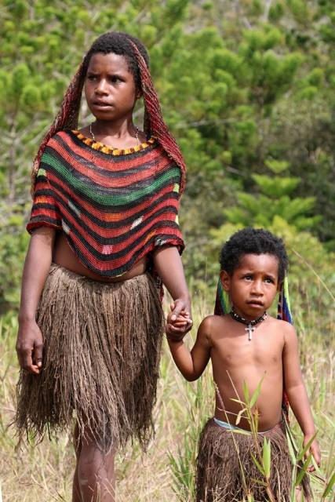

APA ITU NOKEN?
Noken adalah jaring simpul atau tas anyaman yang dibuat secara manual dari serat kayu atau daun oleh komunitas di Provinsi Papua dan Papua Barat, Indonesia. Pria dan wanita menggunakannya untuk membawa hasil perkebunan, tangkapan dari laut atau danau, kayu bakar, bayi atau hewan kecil, serta untuk berbelanja dan menyimpan barang di rumah. Noken juga bisa dipakai, seringkali untuk perayaan tradisional, atau diberikan sebagai tanda perdamaian. Metode pembuatan Noken bervariasi antar komunitas, tetapi secara umum, cabang, batang, atau kulit kayu dari pohon kecil atau semak tertentu dipotong, dipanaskan di atas api dan direndam dalam air. Serat kayu yang tersisa kemudian dikeringkan dan dipintal untuk membuat benang atau tali yang kuat, yang kadang-kadang diwarnai menggunakan pewarna alami. Benang ini diikat dengan tangan untuk membuat tas jaring dengan berbagai pola dan ukuran. Proses ini memerlukan keterampilan manual yang tinggi, ketelitian, dan rasa seni, serta membutuhkan waktu beberapa bulan untuk dikuasai. Namun, jumlah orang yang membuat dan menggunakan Noken semakin berkurang. Faktor-faktor yang mengancam kelangsungannya termasuk kurangnya kesadaran, melemahnya transmisi tradisional, berkurangnya jumlah pengrajin, persaingan dari tas buatan pabrik, masalah dalam mendapatkan bahan baku tradisional dengan mudah dan cepat, serta pergeseran nilai budaya Noken.
Fungsi Noken
- Tempat Menaru Bayi
- Tempat Menyimpan Hasil Kebun
- Busana 
Noken, tas anyaman tradisional khas Papua, memiliki banyak fungsi, salah satunya adalah sebagai tempat untuk menaruh bayi. Noken yang digunakan untuk menaruh bayi biasanya berukuran lebih besar dan kuat. Masyarakat Papua mempercayai bahwa menaruh bayi dalam Noken dapat memberikan kenyamanan dan keamanan karena bahan alami yang digunakan serta cara pembuatannya yang kokoh. Dalam budaya Papua, bayi yang ditempatkan dalam Noken akan digantung di tempat yang aman, seperti di dalam rumah atau di bawah pohon besar. Hal ini memudahkan ibu untuk melakukan kegiatan sehari-hari sembari tetap mengawasi bayi mereka. Penggunaan Noken sebagai tempat menaruh bayi juga memiliki makna simbolis, yaitu menunjukkan kepercayaan masyarakat Papua terhadap kekuatan dan perlindungan alam. Noken yang digunakan untuk bayi biasanya dihiasi dengan motif dan warna yang indah, menunjukkan keterampilan dan kreativitas pembuatnya. Proses pembuatannya pun memerlukan ketelitian dan kesabaran, karena harus memastikan bahwa Noken tersebut cukup kuat untuk menopang berat bayi dan aman untuk digunakan. Dengan segala nilai budaya dan praktis yang terkandung di dalamnya, Noken sebagai tempat menaruh bayi adalah salah satu bentuk kearifan lokal yang patut dijaga dan dilestarikan..

NNoken, tas anyaman tradisional dari Papua, memiliki fungsi penting dalam kehidupan sehari-hari masyarakat Papua, salah satunya adalah sebagai tempat untuk menyimpan hasil kebun. Noken yang digunakan untuk tujuan ini biasanya dibuat dengan ukuran yang cukup besar dan dirancang untuk menahan beban berat. Hasil kebun seperti buah-buahan, sayuran, umbi-umbian, dan hasil panen lainnya disimpan dalam Noken untuk memudahkan transportasi dari ladang ke rumah. Bahan alami yang digunakan untuk membuat Noken, seperti serat kayu atau daun, memberikan sirkulasi udara yang baik sehingga membantu menjaga kesegaran hasil kebun selama proses penyimpanan dan transportasi. Penggunaan Noken sebagai tempat menyimpan hasil kebun juga mencerminkan hubungan erat antara masyarakat Papua dengan alam. Proses pembuatan Noken yang melibatkan pengumpulan, pengolahan, dan anyaman serat alami menunjukkan keterampilan dan pengetahuan mendalam masyarakat Papua tentang sumber daya alam mereka. Selain fungsinya yang praktis, Noken juga memiliki nilai budaya yang tinggi. Setiap Noken dapat dihiasi dengan motif-motif tradisional yang memiliki makna simbolis dan estetika. Motif-motif ini sering kali menggambarkan cerita atau filosofi hidup masyarakat Papua, menambah nilai budaya dan artistik pada setiap Noken yang dibuat. Dengan menggunakan Noken untuk menyimpan hasil kebun, masyarakat Papua tidak hanya mempertahankan tradisi dan kearifan lokal mereka, tetapi juga menunjukkan cara hidup yang harmonis dengan alam. Oleh karena itu, pelestarian dan penggunaan Noken sebagai bagian dari kehidupan sehari-hari masyarakat Papua adalah hal yang sangat penting untuk menjaga warisan budaya yang berharga ini.
Noken, tas tradisional khas Papua yang terbuat dari serat kulit kayu atau serat pohon lainnya, memiliki nilai budaya yang tinggi dan berfungsi sebagai simbol status sosial serta aksesori busana dalam berbagai upacara adat. Dalam konteks budaya Papua, noken tidak hanya berfungsi sebagai tas untuk membawa barang, tetapi juga menjadi lambang status sosial yang menunjukkan identitas dan kedudukan pemakainya. Noken besar dan dihiasi dengan baik sering kali menandakan status sosial yang lebih tinggi dan digunakan dalam upacara adat seperti pernikahan dan penobatan kepala suku. Sebagai bagian dari busana tradisional, noken dapat dipakai di kepala atau disandang di bahu, tergantung pada adat masing-masing suku, dan dihiasi dengan motif dan warna yang mencerminkan identitas suku dan status pemakainya. Melalui penggunaannya dalam berbagai aspek kehidupan sehari-hari dan upacara adat, noken membantu menjaga kebudayaan Papua tetap hidup dan dihargai.
klik this for more informationNilai Budaya dari Noken
Noken, tas tradisional khas Papua, memiliki nilai budaya yang sangat penting dan beragam, mencakup aspek sosial, ekonomi, dan simbolis dalam kehidupan masyarakat Papua. Berikut beberapa nilai budaya dari noken:
- Identitas dan Status Sosial
- Keterampilan dan Warisan Budaya
- Fungsionalitas dalam Kehidupan Sehari-Hari
- Lambang Kesatuan dan Kerjasama
- Representasi Alam dan Lingkungan
- Pengakuan Internasional
Noken berfungsi sebagai simbol identitas dan status sosial dalam masyarakat Papua. Noken yang besar dan dihiasi dengan baik sering kali menunjukkan status sosial yang lebih tinggi. Penggunaan noken dalam berbagai upacara adat, seperti pernikahan dan penobatan kepala suku, menandakan kehormatan dan prestise bagi pemiliknya.
Pembuatan noken adalah keterampilan tradisional yang diwariskan dari generasi ke generasi, terutama di kalangan perempuan Papua. Proses pembuatannya yang rumit dan memerlukan keterampilan khusus mencerminkan keahlian tangan dan kesabaran. Dengan terus mempraktikkan dan mengajarkan keterampilan ini, masyarakat Papua menjaga warisan budaya mereka tetap hidup.
Selain nilai simbolisnya, noken juga memiliki fungsi praktis yang tinggi. Digunakan untuk membawa berbagai barang, seperti hasil bumi, kayu bakar, dan kebutuhan sehari-hari, noken menunjukkan adaptabilitas dan kegunaan dalam kehidupan sehari-hari masyarakat Papua. Fleksibilitas noken dalam berbagai situasi membuatnya menjadi bagian tak terpisahkan dari kehidupan sehari-hari.
Dalam budaya Papua, pembuatan dan penggunaan noken juga melambangkan kesatuan dan kerjasama. Noken sering dibuat dalam kelompok dan digunakan dalam berbagai kegiatan komunitas, menunjukkan pentingnya solidaritas dan kebersamaan dalam budaya Papua.
Noken terbuat dari bahan-bahan alami yang tersedia di lingkungan sekitar, seperti serat kulit kayu dan serat anggrek. Penggunaan bahan alami ini menunjukkan hubungan yang erat antara masyarakat Papua dan alam sekitarnya, serta penghargaan terhadap sumber daya alam yang mereka miliki.
Noken telah diakui sebagai Warisan Budaya Takbenda oleh UNESCO pada tahun 2012, yang menegaskan pentingnya noken sebagai bagian dari warisan budaya dunia. Pengakuan ini membantu meningkatkan kesadaran global akan kekayaan budaya Papua dan pentingnya melestarikan tradisi-tradisi tersebut.
Noken bukan sekadar tas fungsional; ia merupakan simbol identitas, keterampilan, dan warisan budaya yang mendalam bagi masyarakat Papua. Nilai-nilai yang terkandung dalam noken mencerminkan kehormatan, solidaritas, hubungan dengan alam, serta pentingnya melestarikan tradisi yang kaya ini. Melalui penggunaan dan pembuatan noken, masyarakat Papua terus menjaga dan merayakan warisan budaya mereka, memperkuat identitas dan kebanggaan kolektif mereka.